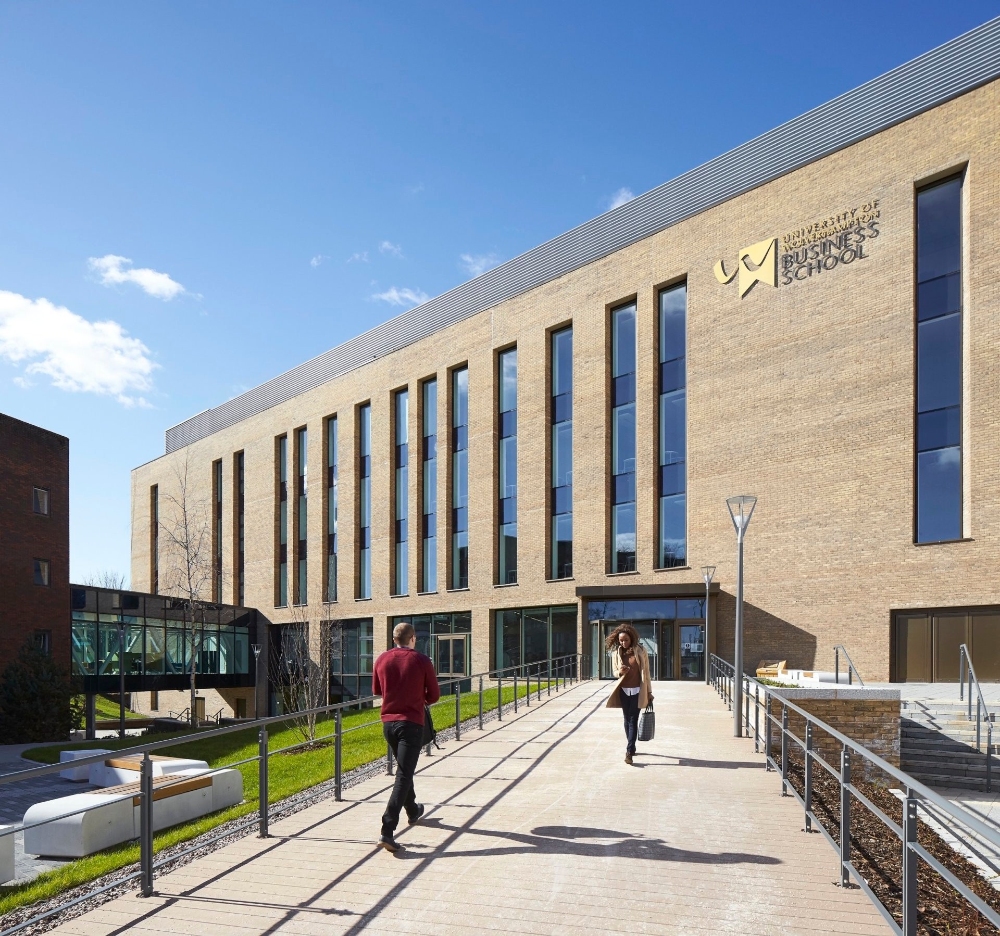

Discover the vibrant lifestyle at KIC College, where academic excellence meets an enriching campus experience! Our dynamic environment fosters personal growth, lifelong friendships, and a variety of extracurricular activities. Enjoy engaging discussions and unforgettable events. Join us to blend learning with fun and create lasting memories!